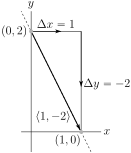
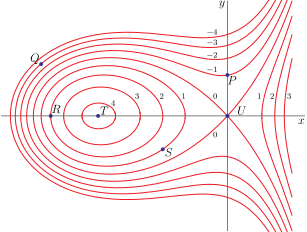
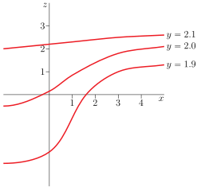

Section 2.9 Maximum and Minimum Values
One of the core topics in single variable calculus courses is finding the maxima and minima of functions of one variable. We'll now extend that discussion to functions of more than one variable 1 . Rather than leaping into the deep end, we'll not be too ambitious and concentrate on functions of two variables. That being said, many of the techniques work more generally. To start, we have the following natural extensions to some familiar definitions.
Definition 2.9.1.
Let the function \(f(x,y)\) be defined for all \((x,y)\) in some subset \(R\) of \(\bbbr^2\text{.}\) Let \((a,b)\) be a point in \(R\text{.}\)
- \((a,b)\) is a local maximum of \(f(x,y)\) if \(f(x,y)\le f(a,b)\) for all \((x,y)\) close to \((a,b)\text{.}\) More precisely, \((a,b)\) is a local maximum of \(f(x,y)\) if there is an \(r \gt 0\) such that \(f(x,y)\le f(a,b)\) for all points \((x,y)\) within a distance \(r\) of \((a,b)\text{.}\)
- \((a,b)\) is a local minimum of \(f(x,y)\) if \(f(x,y)\ge f(a,b)\) for all \((x,y)\) close to \((a,b)\text{.}\)
- Local maximum and minimum values are also called extremal values.
- \((a,b)\) is an absolute maximum or global maximum of \(f(x,y)\) if \(f(x,y)\le f(a,b)\) for all \((x,y)\) in \(R\text{.}\)
- \((a,b)\) is an absolute minimum or global minimum of \(f(x,y)\) if \(f(x,y)\ge f(a,b)\) for all \((x,y)\) in \(R\text{.}\)
Subsection 2.9.1 Local Maxima and Minima
One of the first things you did when you were developing the techniques used to find the maximum and minimum values of \(f(x)\) was ask yourself 2
- Suppose that the largest value of \(f(x)\) is \(f(a)\text{.}\) What does that tell us about \(a\text{?}\)
After a little thought you answered
- If the largest value of \(f(x)\) is \(f(a)\) and \(f\) is differentiable at \(a\text{,}\) then \(f'(a)=0\text{.}\)
Let's recall why that's true. Suppose that the largest value of \(f(x)\) is \(f(a)\text{.}\) Then for all \(h \gt 0\text{,}\)
Taking the limit \(h\rightarrow 0\) tells us that \(f'(a)\le 0\text{.}\) Similarly 3 , for all \(h \lt 0\text{,}\)
Taking the limit \(h\rightarrow 0\) now tells us that \(f'(a)\ge 0\text{.}\) So we have both \(f'(a)\ge 0\) and \(f'(a)\le 0\) which forces \(f'(a)=0\text{.}\)
You also observed at the time that for this argument to work, you only need \(f(x)\le f(a)\) for all \(x\)'s close to \(a\text{,}\) not necessarily for all \(x\)'s in the whole world. (In the above inequalities, we only used \(f(a+h)\) with \(h\) small.) Since we care only about \(f(x)\) for \(x\) near \(a\text{,}\) we can refine the above statement.
- If \(f(a)\) is a local maximum for \(f(x)\) and \(f\) is differentiable at \(a\text{,}\) then \(f'(a)=0\text{.}\)
Precisely the same reasoning applies to minima.
- If \(f(a)\) is a local minimum for \(f(x)\) and \(f\) is differentiable at \(a\text{,}\) then \(f'(a)=0\text{.}\)
Let's use the ideas of the above discourse to extend the study of local maxima and local minima to functions of more than one variable. Suppose that the function \(f(x,y)\) is defined for all \((x,y)\) in some subset \(R\) of \(\bbbr^2\text{,}\) that \((a,b)\) is point of \(R\) that is not on the boundary of \(R\text{,}\) and that \(f\) has a local maximum at \((a,b)\text{.}\) See the figure below.
Then the function \(f(x,y)\) must decrease in value as \((x,y)\) moves away from \((a,b)\) in any direction. No matter which direction \(\vd\) we choose, the directional derivative of \(f\) at \((a,b)\) in direction \(\vd\) must be zero or smaller. Writing this in mathematical symbols, we get
And the directional derivative of \(f\) at \((a,b)\) in the direction \(-\vd\) also must be zero or negative.
As \(\vnabla f(a,b)\cdot\frac{\vd}{|\vd|}\) must be both positive (or zero) and negative (or zero) at the same time, it must be zero. In particular, choosing \(\vd=\hi\) forces the \(x\) component of \(\vnabla f(a,b)\) to be zero, and choosing \(\vd=\hj\) forces the \(y\) component of \(\vnabla f(a,b)\) to be zero. We have thus shown that \(\vnabla f(a,b)=\vZero\text{.}\) The same argument shows that \(\vnabla f(a,b)=\vZero\) when \((a,b)\) is a local minimum too. This is an important and useful result, so let's theoremise it.
Theorem 2.9.2.
Let the function \(f(x,y)\) be defined for all \((x,y)\) in some subset \(R\) of \(\bbbr^2\text{.}\) Assume that
- \((a,b)\) is a point of \(R\) that is not on the boundary of \(R\) and
- \((a,b)\) is a local maximum or local minimum of \(f\) and that
- the partial derivatives of \(f\) exist at \((a,b)\text{.}\)
Then
Definition 2.9.3.
Let \(f(x,y)\) be a function and let \((a,b)\) be a point in its domain. Then
- if \(\vnabla f(a,b)\) exists and is zero we call \((a,b)\) a critical point (or a stationary point) of the function, and
- if \(\vnabla f(a,b)\) does not exist then we call \((a,b)\) a singular point of the function.
Warning 2.9.4.
Note that some people (and texts) combine both of these cases and call \((a,b)\) a critical point when either the gradient is zero or does not exist.
Warning 2.9.5.
Theorem 2.9.2 tells us that every local maximum or minimum (in the interior of the domain of a function whose partial derivatives exist) is a critical point. Beware that it does not 4 tell us that every critical point is either a local maximum or a local minimum.
In fact, we shall see later 5 , in Examples 2.9.13 and 2.9.15, critical points that are neither local maxima nor a local minima. None-the-less, Theorem 2.9.2 is very useful because often functions have only a small number of critical points. To find local maxima and minima of such functions, we only need to consider its critical and singular points. We'll return later to the question of how to tell if a critical point is a local maximum, local minimum or neither. For now, we'll just practice finding critical points.
Example 2.9.6. \(f(x,y)=x^2-2xy+2y^2+2x-6y+12\).
Find all critical points of \(f(x,y)=x^2-2xy+2y^2+2x-6y+12\text{.}\)
To find the critical points, we need to find the gradient. To find the gradient we need to find the first order partial derivatives. So, as a preliminary calculation, we find the two first order partial derivatives of \(f(x,y)\text{.}\)
So the critical points are the solutions of the pair of equations
or equivalently (dividing by two and moving the constants to the right hand side)
This is a system of two equations in two unknowns (\(x\) and \(y\)). One strategy for a solving system like this is to
- First use one of the equations to solve for one of the unknowns in terms of the other unknown. For example, (E1) tells us that \(y= x+1\text{.}\) This expresses \(y\) in terms of \(x\text{.}\) We say that we have solved for \(y\) in terms of \(x\text{.}\)
- Then substitute the result, \(y= x+1\) in our case, into the other equation, (E2). In our case, this gives\begin{equation*} -x+2(x+1)=3 \iff x+2=3 \iff x=1 \end{equation*}
- We have now found that \(x=1\text{,}\) \(y=x+1=2\) is the only solution. So the only critical point is \((1,2)\text{.}\) Of course it only takes a moment to verify that \(\vnabla f(1,2) =\llt 0,0\rgt\text{.}\) It is a good idea to do this as a simple check of our work.
An alternative strategy for solving a system of two equations in two unknowns, like (E1) and (E2), is to
- add equations (E1) and (E2) together. This gives\begin{equation*} (E1) + (E2):\ \ (1-1)x+(-1+2)y = -1+3 \iff y=2 \end{equation*}The point here is that adding equations (E1) and (E2) together eliminates the unknown \(x\text{,}\) leaving us with one equation in the unknown \(y\text{,}\) which is easily solved. For other systems of equations you might have to multiply the equations by some numbers before adding them together.
- We now know that \(y=2\text{.}\) Substituting it into (E1) gives us\begin{equation*} x-2=-1 \implies x=1 \end{equation*}
- Once again (thankfully) we have found that the only critical point is \((1,2)\text{.}\)
This was pretty easy because we only had to solve linear equations, which in turn was a consequence of the fact that \(f(x,y)\) was a polynomial of degree two. Here is an example with some slightly more challenging algebra.
Example 2.9.7. \(f(x,y)=2x^3 - 6xy + y^2 +4y \).
Find all critical points of \(f(x,y)=2x^3 - 6xy + y^2 +4y \text{.}\)
As in the last example, we need to find where the gradient is zero, and to find the gradient we need the first order partial derivatives.
So the critical points are the solutions of
We can rewrite the first equation as \(y=x^2\text{,}\) which expresses \(y\) as a function of \(x\text{.}\) We can then substitute \(y=x^2\) into the second equation, giving
When \(x=1\text{,}\) \(y=1^2=1\) and when \(x=2\text{,}\) \(y=2^2=4\text{.}\) So, there are two critical points: \((1,1),\ (2,4)\text{.}\)
Alternatively, we could have also used the second equation to write \(y=3x-2\text{,}\) and then substituted that into the first equation to get
just as above.
And here is an example for which the algebra requires a bit more thought.
Example 2.9.8. \(f(x,y) = xy(5x+y-15)\).
Find all critical points of \(f(x,y)=xy(5x+y-15) \text{.}\)
The first order partial derivatives of \(f(x,y)=xy(5x+y-15)\) are
The critical points are the solutions of \(f_x(x,y)=f_y(x,y)=0\text{.}\) That is, we need to find all \(x,y\) that satisfy the pair of equations
The first equation, \(y(10x+y-15)=0\text{,}\) is satisfied if at least one of the two factors \(y\text{,}\) \((10x+y-15)\) is zero. So the first equation is satisfied if at least one of the two equations
is satisfied. The second equation, \(x(5x+2y-15)=0\text{,}\) is satisfied if at least one of the two factors \(x\text{,}\) \((5x+2y-15)\) is zero. So the second equation is satisfied if at least one of the two equations
is satisfied.
So both critical point equations (E1) and (E2) are satisfied if and only if at least one of (E1a), (E1b) is satisfied and in addition at least one of (E2a), (E2b) is satisfied. So both critical point equations (E1) and (E2) are satisfied if and only if at least one of the following four possibilities hold.
- (E1a) and (E2a) are satisfied if and only if \(x=y=0\)
- (E1a) and (E2b) are satisfied if and only if \(y=0,\ 5x+2y=15 \iff y=0,\ 5x=15\)
- (E1b) and (E2a) are satisfied if and only if \(10x+y=15,\ x=0 \iff y=15,\ x=0\)
- (E1b) and (E2b) are satisfied if and only if \(10x+y=15,\ 5x+2y=15\text{.}\) We can use, for example, the second of these equations to solve for \(x\) in terms of \(y\text{:}\) \(x =\frac{1}{5}(15-2y)\text{.}\) When we substitute this into the first equation we get \(2(15-2y)+y=15\text{,}\) which we can solve for \(y\text{.}\) This gives \(-3y=15-30\) or \(y=5\) and then \(x=\frac{1}{5}(15-2\times 5)=1\text{.}\)
In conclusion, the critical points are \((0,0)\text{,}\) \((3,0)\text{,}\) \((0,15)\) and \((1,5)\text{.}\)
A more compact way to write what we have just done is
Let's try a more practical example — something from the real world. Well, a mathematician's “real world”. The interested reader should search-engine their way to a discussion of “idealisation”, “game theory” “Cournot models” and “Bertrand models”. But don't spend too long there. A discussion of breweries is about to take place.
Example 2.9.9.
In a certain community, there are two breweries in competition 6 , so that sales of each negatively affect the profits of the other. If brewery A produces \(x\) litres of beer per month and brewery B produces \(y\) litres per month, then the profits of the two breweries are given by
respectively. Find the sum of the two profits if each brewery independently sets its own production level to maximize its own profit and assumes that its competitor does likewise. Then, assuming cartel behaviour, find the sum of the two profits if the two breweries cooperate so as to maximize that sum 7 .
If \(A\) adjusts \(x\) to maximize \(P\) (for \(y\) held fixed) and \(B\) adjusts \(y\) to maximize \(Q\) (for \(x\) held fixed) then \(x\) and \(y\) are determined by the equations
Equation (E1) yields \(x=\half 10^6\) and equation (E2) yields \(y=\half 10^6\text{.}\) Knowing \(x\) and \(y\) we can determine \(P\text{,}\) \(Q\) and the total profit
On the other hand if \((A,B)\) adjust \((x,y)\) to maximize \(P+Q =2(x+y)-\tfrac{1}{10^6}\big(\tfrac{5}{2}x^2+3y^2\big)\text{,}\) then \(x\) and \(y\) are determined by
Equation (E1) yields \(x=\tfrac{2}{5} 10^6\) and equation (E2) yields \(y=\tfrac{1}{3} 10^6\text{.}\) Again knowing \(x\) and \(y\) we can determine the total profit
So cooperating really does help their profits. Unfortunately, like a very small tea-pot, consumers will be a little poorer 8 .
Moving swiftly away from the last pun, let's do something a little more geometric.
Example 2.9.10.
Equal angle bends are made at equal distances from the two ends of a 100 metre long fence so the resulting three segment fence can be placed along an existing wall to make an enclosure of trapezoidal shape. What is the largest possible area for such an enclosure?
This is a very geometric problem (fenced off from pun opportunities), and as such we should start by drawing a sketch and introducing some variable names.
The area enclosed by the fence is the area inside the blue rectangle (in the figure on the right above) plus the area inside the two blue triangles.
To maximize the area, we need to solve
Note that both terms in the first equation contain the factor \(\sin\theta\) and all terms in the second equation contain the factor \(x\text{.}\) If either \(\sin\theta\) or \(x\) are zero the area \(A(x,\theta)\) will also be zero, and so will certainly not be maximal. So we may divide the first equation by \(\sin\theta\) and the second equation by \(x\text{,}\) giving
These equations might look a little scary. But there is no need to panic. They are not as bad as they look because \(\theta\) enters only through \(\cos\theta\) and \(\sin^2\theta\text{,}\) which we can easily write in terms of \(\cos\theta\text{.}\) Furthermore we can eliminate \(\cos\theta\) by observing that the first equation forces \(\cos\theta=-\frac{100-4x}{2x}\) and hence \(\sin^2\theta=1-\cos^2\theta=1-\frac{(100-4x)^2}{4x^2}\text{.}\) Substituting these into the second equation gives
and the maximum area enclosed is
Now here is a very useful (even practical!) statistical example — finding the line that best fits a given collection of points.
Example 2.9.11. Linear regression.
An experiment yields \(n\) data points \(\ (x_i,y_i),\ i=1,2,\cdots,n.\) We wish to find the straight line \(\ y=mx+b\ \) which “best” fits the data.
The definition of “best” is “minimizes the root mean square error”, i.e. minimizes
Note that
- term number \(i\) in \(E(m,b)\) is the square of the difference between \(y_i\text{,}\) which is the \(i^{\rm th}\) measured value of \(y\text{,}\) and \(\Big[mx+b\Big]_{x=x_i}\text{,}\) which is the approximation to \(y_i\) given by the line \(y=mx+b\text{.}\)
- All terms in the sum are positive, regardless of whether the points \((x_i,y_i)\) are above or below the line.
Our problem is to find the \(m\) and \(b\) that minimizes \(E(m,b)\text{.}\) This technique for drawing a line through a bunch of data points is called “linear regression”. It is used a lot 9 10 . Even in the real world — and not just the real world that you find in mathematics problems. The actual real world that involves jobs.
We wish to choose \(m\) and \(b\) so as to minimize \(E(m,b)\text{.}\) So we need to determine where the partial derivatives of \(E\) are zero.
There are a lot of symbols here. But remember that all of the \(x_i\)'s and \(y_i\)'s are given constants. They come from, for example, experimental data. The only unknowns are \(m\) and \(b\text{.}\) To emphasize this, and to save some writing, define the constants
The equations which determine the critical points are (after dividing by two)
These are two linear equations on the unknowns \(m\) and \(b\text{.}\) They may be solved in any of the usual ways. One is to use (E2) to solve for \(b\) in terms of \(m\)
and then substitute this into (E1) to get the equation
for \(m\text{.}\) We can then solve this equation for \(m\) and substitute back into (E3) to get \(b\text{.}\) This gives
Another way to solve the system of equations is
which gives the same solution.
So given a bunch of data points, it only takes a quick bit of arithmetic — no calculus required — to apply the above formulae and so to find the best fitting line. Of course while you don't need any calculus to apply the formulae, you do need calculus to understand where they came from. The same technique can be extended to other types of curve fitting problems. For example, polynomial regression.
Subsection 2.9.2 The Second Derivative Test
Now let's start thinking about how to tell if a critical point is a local minimum or maximum. Remember what happens for functions of one variable. Suppose that \(x=a\) is a critical point of the function \(f(x)\text{.}\) Any (sufficiently smooth) function is well approximated, when \(x\) is close to \(a\text{,}\) by the first few terms of its Taylor expansion
As \(a\) is a critical point, we know that \(f'(a)=0\) and
If \(f''(a)\ne 0\text{,}\) \(f(x)\) is going to look a lot like \(f(a) + \tfrac{1}{2} f''(a)\,(x-a)^2 \) when \(x\) is really close to \(a\text{.}\) In particular
- if \(f''(a) \gt 0\text{,}\) then we will have \(f(x) \gt f(a)\) when \(x\) is close to (but not equal to) \(a\text{,}\) so that \(a\) will be a local minimum and
- if \(f''(a) \lt 0\text{,}\) then we will have \(f(x) \lt f(a)\) when \(x\) is close to (but not equal to) \(a\text{,}\) so that \(a\) will be a local maximum, but
- if \(f''(a)=0\text{,}\) then we cannot draw any conclusions without more work.
A similar, but messier, analysis is possible for functions of two variables. Here are some simple quadratic examples that provide a warmup for that messier analysis.
Example 2.9.12. \(f(x,y)= x^2+3xy+3y^2-6x-3y-6\).
Consider \(f(x,y)= x^2+3xy+3y^2-6x-3y-6\text{.}\) The gradient of \(f\) is
So \((x,y)\) is a critical point of \(f\) if and only if
Multiplying the first equation by 2 and subtracting the second equation gives
Then substituting \(x=9\) back into the first equation gives
So \(f(x,y)\) has precisely one critical point, namely \((9\,,\,-4)\text{.}\)
Now let's try to determine if \(f(x,y)\) has a local minimum, or a local maximum, or neither, at \((9,-4)\text{.}\) A good way to determine the behaviour of \(f(x,y)\) for \((x,y)\) near \((9,-4)\) is to make the change of variables 11
and study the behaviour of \(f\) for \(\De x\) and \(\De y\) near zero.
And a good way to study the sign of quadratic expressions like \((\De x)^2 +3\De x\,\De y+3(\De y)^2\) is to complete the square. So far you have probably just completed the square for quadratic expressions that involve only a single variable. For example
When there are two variables around, like \(\De x\) and \(\De y\text{,}\) you can just pretend that one of them is a constant and complete the square as before. For example, if you pretend that \(\De y\) is a constant,
To this point, we have expressed
As the smallest values of \(\left(\De x +\frac{3}{2}\De y\right)^2\) and \(\frac{3}{4}(\De y)^2\) are both zero, we have that
for all \((x,y)\) so that \((9,-4)\) is both a local minimum and a global minimum for \(f\text{.}\)
You have already encountered single variable functions that have a critical point which is neither a local max nor a local min. See Example 3.5.9 in the CLP-1 text. Here are a couple of examples which show that this can also happen for functions of two variables. We'll start with the simplest possible such example.
Example 2.9.13. \(f(x,y)=x^2-y^2\).
The first partial derivatives of \(f(x,y)=x^2-y^2\) are \(f_x(x,y)=2x\) and \(f_y(x,y)=-2y\text{.}\) So the only critical point of this function is \((0,0)\text{.}\) Is this a local minimum or maximum? Well let's start with \((x,y)\) at \((0,0)\) and then move \((x,y)\) away from \((0,0)\) and see if \(f(x,y)\) gets bigger or smaller. At the origin \(f(0,0)=0\text{.}\) Of course we can move \((x,y)\) away from \((0,0)\) in many different directions.
- First consider moving \((x,y)\) along the \(x\)-axis. Then \((x,y)=(x,0)\) and \(f(x,y)=f(x,0)=x^2\text{.}\) So when we start with \(x=0\) and then increase \(x\text{,}\) the value of the function \(f\) increases — which means that \((0,0)\) cannot be a local maximum for \(f\text{.}\)
- Next let's move \((x,y)\) away from \((0,0)\) along the \(y\)-axis. Then \((x,y)=(0,y)\) and \(f(x,y)=f(0,y)=-y^2\text{.}\) So when we start with \(y=0\) and then increase \(y\text{,}\) the value of the function \(f\) decreases — which means that \((0,0)\) cannot be a local minimum for \(f\text{.}\)
So moving away from \((0,0)\) in one direction causes the value of \(f\) to increase, while moving away from \((0,0)\) in a second direction causes the value of \(f\) to decrease. Consequently \((0,0)\) is neither a local minimum or maximum for \(f\text{.}\) It is called a saddle point, because the graph of \(f\) looks like a saddle. (The full definition of “saddle point” is given immediately after this example.) Here are some figures showing the graph of \(f\text{.}\)
The figure below show some level curves of \(f\text{.}\) Observe from the level curves that
- \(f\) increases as you leave \((0,0)\) walking along the \(x\) axis
- \(f\) decreases as you leave \((0,0)\) walking along the \(y\) axis
Approximately speaking, if a critical point \((a,b)\) is neither a local minimum nor a local maximum, then it is a saddle point. For \((a,b)\) to not be a local minimum, \(f\) has to take values bigger than \(f(a,b)\) at some points nearby \((a,b)\text{.}\) For \((a,b)\) to not be a local maximum, \(f\) has to take values smaller than \(f(a,b)\) at some points nearby \((a,b)\text{.}\) Writing this more mathematically we get the following definition.
Definition 2.9.14.
The critical point \((a,b)\) is called a saddle point for the function \(f(x,y)\) if, for each \(r \gt 0\text{,}\)
- there is at least one point \((x,y)\text{,}\) within a distance \(r\) of \((a,b)\text{,}\) for which \(f(x,y) \gt f(a,b)\) and
- there is at least one point \((x,y)\text{,}\) within a distance \(r\) of \((a,b)\text{,}\) for which \(f(x,y) \lt f(a,b)\text{.}\)
Here is another example of a saddle point. This time we have to work a bit to see it.
Example 2.9.15. \(f(x,y)= x^2-2xy-y^2+4y-2\).
Consider \(f(x,y)= x^2-2xy-y^2+4y-2\text{.}\) The gradient of \(f\) is
So \((x,y)\) is a critical point of \(f\) if and only if
The first equation gives that \(x=y\text{.}\) Substituting \(y=x\) into the second equation gives
So \(f(x,y)\) has precisely one critical point, namely \((1,1)\text{.}\)
To determine if \(f(x,y)\) has a local minimum, or a local maximum, or neither, at \((1,1)\text{,}\) we proceed as in Example 2.9.12. We make the change of variables
to give
Completing the square,
Notice that \(f\) has now been written as the difference of two squares, much like the \(f\) in the saddle point Example 2.9.13.
- If \(\De x\) and \(\De y\) are such that the first square \(\left(\De x - \De y\right)^2\) is nonzero, but the second square \((\De y)^2\) is zero, then \(f\big(1+\De x\,,\,1+\De y\big)=\left(\De x - \De y\right)^2 \gt 0 = f(1,1)\text{.}\) That is, whenever \(\De y=0\) and \(\De x\ne \De y\text{,}\) then \(f\big(1+\De x\,,\,1+\De y\big)=\left(\De x - \De y\right)^2 \gt 0 = f(1,1)\text{.}\)
- On the other hand, if \(\De x\) and \(\De y\) are such that the first square \(\left(\De x - \De y\right)^2\) is zero but the second square \((\De y)^2\) is nonzero, then \(f\big(1+\De x\,,\,1+\De y\big)=- 2(\De y)^2 \lt 0 = f(1,1)\text{.}\) That is, whenever \(\De x=\De y\ne 0\text{,}\) then \(f\big(1+\De x\,,\,1+\De y\big) =- 2(\De y)^2 \lt 0 = f(1,1)\text{.}\)
So
- \(f(x,y) \gt f(1,1)\) at all points on the blue line in the figure above, and
- \(f(x,y) \lt f(1,1)\) at all point on the red line.
We conclude that \((1,1)\) is the only critical point for \(f(x,y)\text{,}\) and furthermore that it is a saddle point.
The above three examples show that we can find all critical points of quadratic functions of two variables. We can also classify each critical point as either a minimum, a maximum or a saddle point.
Of course not every function is quadratic. But by using the quadratic approximation 2.6.12 we can apply the same ideas much more generally. Suppose that \((a,b)\) is a critical point of some function \(f(x,y)\text{.}\) For \(\De x\) and \(\De y\) small, the quadratic approximation 2.6.12 gives
since \((a,b)\) is a critical point so that \(f_x(a,b)=f_y(a,b)=0\text{.}\) Then using the technique of Examples 2.9.12 and 2.9.15, we get 12 (details below).
Theorem 2.9.16. Second Derivative Test.
Let \(r \gt 0\) and assume that all second order derivatives of the function \(f(x,y)\) are continuous at all points \((x,y)\) that are within a distance \(r\) of \((a,b)\text{.}\) Assume that \(f_x(a,b)=f_y(a,b)=0\text{.}\) Define
It is called the discriminant of \(f\text{.}\) Then
- if \(D(a,b) \gt 0\) and \(f_{xx}(a,b) \gt 0\text{,}\) then \(f(x,y)\) has a local minimum at \((a,b)\text{,}\)
- if \(D(a,b) \gt 0\) and \(f_{xx}(a,b) \lt 0\text{,}\) then \(f(x,y)\) has a local maximum at \((a,b)\text{,}\)
- if \(D(a,b) \lt 0\text{,}\) then \(f(x,y)\) has a saddle point at \((a,b)\text{,}\) but
- if \(D(a,b)=0\text{,}\) then we cannot draw any conclusions without more work.
Proof.
We are putting quotation marks around the word “Proof”, because we are not going to justify the fact that it suffices to analyse the quadratic approximation in equation \((*)\text{.}\) Let's temporarily suppress the arguments \((a,b)\text{.}\) If \(f_{xx}(a,b)\ne 0\text{,}\) then by completing the square we can write
Similarly, if \(f_{yy}(a,b)\ne 0\text{,}\)
Note that this algebra breaks down if \(f_{xx}(a,b)=f_{yy}(a,b)=0\text{.}\) We'll deal with that case shortly. More importantly, note that
-
if \(\big(f_{xx}f_{yy}-f_{xy}^2\big) \gt 0\) then both \(f_{xx}\) and \(f_{yy}\) must be nonzero and of the same sign and furthermore, whenever \(\De x\) or \(\De y\) are nonzero,
\begin{align*} \left\{\big(f_{xx}\,\De x+f_{xy}\,\De y\big)^2 +\big(f_{xx}f_{yy}-f_{xy}^2\big)\,\De y^2\right\} & \gt 0\quad\text{and}\\ \left\{\big(f_{xy}\,\De x+f_{yy}\,\De y\big)^2 +\big(f_{xx}f_{yy}-f_{xy}^2\big)\,\De x^2\right\} & \gt 0 \end{align*}so that, recalling \((*)\text{,}\)
- if \(f_{xx}(a,b) \gt 0\text{,}\) then \((a,b)\) is a local minimum and
- if \(f_{xx}(a,b) \lt 0\text{,}\) then \((a,b)\) is a local maximum.
- If \(\big(f_{xx}f_{yy}-f_{xy}^2\big) \lt 0\) and \(f_{xx}\) is nonzero then\begin{equation*} \left\{\big(f_{xx}\,\De x+f_{xy}\,\De y\big)^2 +\big(f_{xx}f_{yy}-f_{xy}^2\big)\,\De y^2\right\} \end{equation*}is strictly positive whenever \(\De x\ne 0\text{,}\) \(\De y= 0\) and is strictly negative whenever \(f_{xx}\,\De x+f_{xy}\,\De y=0\text{,}\) \(\De y\ne 0\text{,}\) so that \((a,b)\) is a saddle point. Similarly, \((a,b)\) is also a saddle point if \(\big(f_{xx}f_{yy}-f_{xy}^2\big) \lt 0\) and \(f_{yy}\) is nonzero.
- Finally, if \(f_{xy}\ne 0\) and \(f_{xx}=f_{yy}=0\text{,}\) then\begin{equation*} f_{xx}\,\De x^2 +2f_{xy}\,\De x\,\De y + f_{yy}\,\De y^2 =2f_{xy}\,\De x\,\De y \end{equation*}is strictly positive for one sign of \(\De x\,\De y\) and is strictly negative for the other sign of \(\De x\,\De y\text{.}\) So \((a,b)\) is again a saddle point.
You might wonder why, in the local maximum/local minimum cases of Theorem 2.9.16, \(f_{xx}(a,b)\) appears rather than \(f_{yy}(a,b)\text{.}\) The answer is only that \(x\) is before \(y\) in the alphabet 13 . You can use \(f_{yy}(a,b)\) just as well as \(f_{xx}(a,b)\text{.}\) The reason is that if \(D(a,b) \gt 0\) (as in the first two bullets of the theorem), then because \(D(a,b) = f_{xx}(a,b)\,f_{yy}(a,b) - f_{xy}(a,b)^2 \gt 0\text{,}\) we necessarily have \(f_{xx}(a,b)\,f_{yy}(a,b) \gt 0\) so that \(f_{xx}(a,b)\) and \(f_{yy}(a,b)\) must have the same sign — either both are positive or both are negative.
You might also wonder why we cannot draw any conclusions when \(D(a,b)=0\) and what happens then. The second derivative test for functions of two variables was derived in precisely the same way as the second derivative test for functions of one variable is derived — you approximate the function by a polynomial that is of degree two in \((x-a)\text{,}\) \((y-b)\) and then you analyze the behaviour of the quadratic polynomial near \((a,b)\text{.}\) For this to work, the contributions to \(f(x,y)\) from terms that are of degree two in \((x-a)\text{,}\) \((y-b)\) had better be bigger than the contributions to \(f(x,y)\) from terms that are of degree three and higher in \((x-a)\text{,}\) \((y-b)\) when \((x-a)\text{,}\) \((y-b)\) are really small. If this is not the case, for example when the terms in \(f(x,y)\) that are of degree two in \((x-a)\text{,}\) \((y-b)\) all have coefficients that are exactly zero, the analysis will certainly break down. That's exactly what happens when \(D(a,b)=0\text{.}\) Here are some examples. The functions
all have \((0,0)\) as the only critical point and all have \(D(0,0)=0\text{.}\) The first, \(f_1\) has its minimum there. The second, \(f_2\text{,}\) has its maximum there. The third and fourth have a saddle point there.
Here are sketches of some level curves for each of these four functions (with all renamed to simply \(f\)).
Example 2.9.17. \(f(x,y)=2x^3 - 6xy + y^2 +4y \).
Find and classify all critical points of \(f(x,y)=2x^3 - 6xy + y^2 +4y \text{.}\)
Thinking a little way ahead, to find the critical points we will need the gradient and to apply the second derivative test of Theorem 2.9.16 we will need all second order partial derivatives. So we need all partial derivatives of order up to two. Here they are.
(Of course, \(f_{xy}\) and \(f_{yx}\) have to be the same. It is still useful to compute both, as a way to catch some mechanical errors.)
We have already found, in Example 2.9.7, that the critical points are \((1,1),\ (2,4)\text{.}\) The classification is
| \(\Atop{\text{critical}}{\text{point}}\) | \(f_{xx}f_{yy}-f_{xy}^2\) | \(f_{xx}\) | type |
| \((1,1)\) | \(12\times 2-(-6)^2 \lt 0\) | saddle point | |
| \((2,4)\) | \(24\times 2-(-6)^2 \gt 0\) | 24 | local min |
We were able to leave the \(f_{xx}\) entry in the top row blank, because
- we knew that \(f_{xx}(1,1) f_{yy}(1,1)-f_{xy}^2(1,1) \lt 0\text{,}\) and
- we knew, from Theorem 2.9.16, that \(f_{xx}(1,1) f_{yy}(1,1)-f_{xy}^2(1,1) \lt 0\text{,}\) by itself, was enough to ensure that \((1,1)\) was a saddle point.
Here is a sketch of some level curves of our \(f(x,y)\text{.}\)
They are not needed to answer this question, but can give you some idea as to what the graph of \(f\) looks like.
Example 2.9.18. \(f(x,y) = xy(5x+y-15)\).
Find and classify all critical points of \(f(x,y)=xy(5x+y-15)\text{.}\)
We have already computed the first order partial derivatives
of \(f(x,y)\) in Example 2.9.8. Again, to classify the critical points we need the second order partial derivatives. They are
(Once again, we have computed both \(f_{xy}\) and \(f_{yx}\) to guard against mechanical errors.) We have already found, in Example 2.9.8, that the critical points are \((0,0),\ (0,15),\ (3,0)\) and \((1,5)\text{.}\) The classification is
| \(\Atop{\text{critical}}{\text{point}}\) | \(f_{xx}f_{yy}-f_{xy}^2\) | \(f_{xx}\) | type |
| \((0,0)\) | \(0\times0-(-15)^2 \lt 0\) | saddle point | |
| \((0,15)\) | \(150\times0-15^2 \lt 0\) | saddle point | |
| \((3,0)\) | \(0\times 6-15^2 \lt 0\) | saddle point | |
| \((1,5)\) | \(50\times 2-5^2 \gt 0\) | 75 | local min |
Here is a sketch of some level curves of our \(f(x,y)\text{.}\) \(f\) is negative in the shaded regions and \(f\) is positive in the unshaded regions.
Again this is not needed to answer this question, but can give you some idea as to what the graph of \(f\) looks like.
Example 2.9.19.
Find and classify all of the critical points of \(f(x,y)=x^3+xy^2-3x^2-4y^2+4\text{.}\)
We know the drill now. We start by computing all of the partial derivatives of \(f\) up to order 2.
The critical points are then the solutions of \(f_x=0\text{,}\) \(f_y=0\text{.}\) That is
The second equation, \(2y(x-4)=0 \text{,}\) is satisfied if and only if at least one of the two equations \(y=0\) and \(x=4\) is satisfied.
- When \(y=0\text{,}\) equation (E1) forces \(x\) to obey\begin{equation*} 0=3x^2+0^2-6x=3x(x-2) \end{equation*}so that \(x=0\) or \(x=2\text{.}\)
- When \(x=4\text{,}\) equation (E1) forces \(y\) to obey\begin{equation*} 0=3\times 4^2+y^2-6\times 4=24+y^2 \end{equation*}which is impossible.
So, there are two critical points: \((0,0),\ (2,0)\text{.}\) Here is a table that classifies the critical points.
| \(\Atop{\rm critical}{\rm point}\) | \(f_{xx}f_{yy}-f_{xy}^2\) | \(f_{xx}\) | type |
| \((0,0)\) | \((-6)\times (-8)-0^2 \gt 0\) | \(-6 \lt 0\) | local max |
| \((2,0)\) | \(6\times(-4)-0^2 \lt 0\) | saddle point |
Example 2.9.20.
A manufacturer wishes to make an open rectangular box of given volume \(V\) using the least possible material. Find the design specifications.
Denote by \(x\text{,}\) \(y\) and \(z\text{,}\) the length, width and height, respectively, of the box.
The box has two sides of area \(xz\text{,}\) two sides of area \(yz\) and a bottom of area \(xy\text{.}\) So the total surface area of material used is
However the three dimensions \(x\text{,}\) \(y\) and \(z\) are not independent. The requirement that the box have volume \(V\) imposes the constraint
We can use this constraint to eliminate one variable. Since \(z\) is at the end of the alphabet (poor \(z\)), we eliminate \(z\) by substituting \(z=\frac{V}{xy}\text{.}\) So we have find the values of \(x\) and \(y\) that minimize the function
Let's start by finding the critical points of \(S\text{.}\) Since
\((x,y)\) is a critical point if and only if
Solving (E1) for \(y\) gives \(y=\frac{2V}{x^2}\text{.}\) Substituting this into (E2) gives
As there is only one critical point, we would expect it to give the minimum 14 . But let's use the second derivative test to verify that at least the critical point is a local minimum. The various second partial derivatives are
So
and, by Theorem 2.9.16.b, \(\big(\root{3}\of{2V}\,,\,\root{3}\of{2V}\big)\) is a local minimum and the desired dimensions are
Note that our solution has \(x=y\text{.}\) That's a good thing — the function \(S(x,y)\) is symmetric in \(x\) and \(y\text{.}\) Because the box has no top, the symmetry does not extend to \(z\text{.}\)
Subsection 2.9.3 Absolute Minima and Maxima
Of course a local maximum or minimum of a function need not be the absolute maximum of minimum. We'll now consider how to find the absolute maximum and minimum. Let's start by reviewing how one finds the absolute maximum and minimum of a function of one variable on an interval.
For concreteness, let's suppose that we want to find the extremal 15 values of a function \(f(x)\) on the interval \(0\le x\le 1\text{.}\) If an extremal value is attained at some \(x=a\) which is in the interior of the interval, i.e. if \(0 \lt a \lt 1\text{,}\) then \(a\) is also a local maximum or minimum and so has to be a critical point of \(f\text{.}\) But if an extremal value is attained at a boundary point \(a\) of the interval, i.e. if \(a=0\) or \(a=1\text{,}\) then \(a\) need not be a critical point of \(f\text{.}\) This happens, for example, when \(f(x)=x\text{.}\) The largest value of \(f(x)\) on the interval \(0\le x\le 1\) is \(1\) and is attained at \(x=1\text{,}\) but \(f'(x)=1\) is never zero, so that \(f\) has no critical points.
So to find the maximum and minimum of the function \(f(x)\) on the interval \([0,1]\text{,}\) you
-
build up a list of all candidate points \(0\le a\le 1\) at which the maximum or minimum could be attained, by finding all \(a\)'s for which either
- \(0 \lt a \lt 1\) and \(f'(a)=0\) or
- \(0 \lt a \lt 1\) and \(f'(a)\) does not exist 16 or
- \(a\) is a boundary point, i.e. \(a=0\) or \(a=1\text{,}\)
- and then you evaluate \(f(a)\) at each \(a\) on the list of candidates. The biggest of these candidate values of \(f(a)\) is the absolute maximum and the smallest of these candidate values is the absolute minimum.
The procedure for finding the maximum and minimum of a function of two variables, \(f(x,y)\) in a set like, for example, the unit disk \(x^2+y^2\le 1\text{,}\) is similar. You again
-
build up a list of all candidate points \((a,b)\) in the set at which the maximum or minimum could be attained, by finding all \((a,b)\)'s for which either 17
- \((a,b)\) is in the interior of the set (for our example, \(a^2+b^2 \lt 1\)) and \(f_x(a,b)=f_y(a,b)=0\) or
- \((a,b)\) is in the interior of the set and \(f_x(a,b)\) or \(f_y(a,b)\) does not exist or
\((a,b)\) is a boundary 18 point, (for our example, \(a^2+b^2=1\)), and could give the maximum or minimum on the boundary — more about this shortly —
- and then you evaluate \(f(a,b)\) at each \((a,b)\) on the list of candidates. The biggest of these candidate values of \(f(a,b)\) is the absolute maximum and the smallest of these candidate values is the absolute minimum.
The boundary of a set, like \(x^2+y^2\le 1\text{,}\) in \(\bbbr^2\) is a curve, like \(x^2+y^2=1\text{.}\) This curve is a one dimensional set, meaning that it is like a deformed \(x\)-axis. We can find the maximum and minimum of \(f(x,y)\) on this curve by converting \(f(x,y)\) into a function of one variable (on the curve) and using the standard function of one variable techniques. This is best explained by some examples.
Example 2.9.21.
Find the maximum and minimum of \(T(x,y)=(x+y)e^{-x^2-y^2}\) on the region defined by \(x^2+y^2\le 1\) (i.e. on the unit disk).
Let's follow our checklist. First critical points, then points where the partial derivatives don't exist, and finally the boundary.
Interior Critical Points: If \(T\) takes its maximum or minimum value at a point in the interior, \(x^2+y^2 \lt 1\text{,}\) then that point must be either a critical point of \(T\) or a singular point of \(T\text{.}\) To find the critical points we compute the first order derivatives.
Because the exponential \(e^{-x^2-y^2}\) is never zero, the critical points are the solutions of
- As both \(2x(x+y)\) and \(2y(x+y)\) are nonzero, we may divide the two equations, which gives \(\frac{x}{y}=1\text{,}\) forcing \(x=y\text{.}\)
- Substituting this into either equation gives \(2x(2x)=1\) so that \(x=y=\pm\frac{1}{2}\text{.}\)
So the only critical points are \((\frac{1}{2},\frac{1}{2})\) and \((-\frac{1}{2},-\frac{1}{2})\text{.}\) Both are in \(x^2+y^2 \lt 1\text{.}\)
Singular points: In this problem, there are no singular points.
Boundary: Points on the boundary satisfy \(x^2+y^2=1\text{.}\) That is they lie on a circle. We may use the figure below to express \(x=\cos t\) and \(y=\sin t\text{,}\) in terms of the angle \(t\text{.}\) This will make the formula for \(T\) on the boundary quite a bit easier to deal with. On the boundary,
As all \(t\)'s are allowed, this function takes its max and min at zeroes of
That is, \((\cos t+\sin t)e^{-1}\) takes its max and min
- when \(\sin t=\cos t\text{,}\)
- that is, when \(x=y\) and \(x^2+y^2=1\text{,}\)
- which forces \(x^2+x^2=1\) and hence \(x=y=\pm\tfrac{1}{\sqrt{2}}\text{.}\)
All together, we have the following candidates for max and min, with the max and min indicated.
| point | \((\half,\half)\) | \((-\half,-\half)\) | \((\tfrac{1}{\sqrt{2}},\tfrac{1}{\sqrt{2}})\) | \((-\tfrac{1}{\sqrt{2}},-\tfrac{1}{\sqrt{2}})\) |
| value of \(T\) | \(\tfrac{1}{\sqrt{e}}\approx0.61\) | \(-\tfrac{1}{\sqrt{e}}\) | \(\tfrac{\sqrt{2}}{e}\approx0.52\) | \(-\tfrac{\sqrt{2}}{e}\) |
| max | min |
The following sketch shows all of the critical points. It is a good idea to make such a sketch so that you don't accidentally include a critical point that is outside of the allowed region.
In the last example, we analyzed the behaviour of \(f\) on the boundary of the region of interest by using the parametrization \(x=\cos t\text{,}\) \(y=\sin t\) of the circle \(x^2+y^2=1\text{.}\) Sometimes using this parametrization is not so clean. And worse, some curves don't have such a simple parametrization. In the next problem we'll look at the boundary a little differently.
Example 2.9.22.
Find the maximum and minimum values of \(f(x,y)=x^3+xy^2-3x^2-4y^2+4\) on the disk \(x^2+y^2\le 1\text{.}\)
Again, we first find all critical points, then find all singular points and, finally, analyze the boundary.
Interior Critical Points: If \(f\) takes its maximum or minimum value at a point in the interior, \(x^2+y^2 \lt 1\text{,}\) then that point must be either a critical point of \(f\) or a singular point of \(f\text{.}\) To find the critical points 19 we compute the first order derivatives.
The critical points are the solutions of
The second equation, \(2y(x-4)=0 \text{,}\) is satisfied if and only if at least one of the two equations \(y=0\) and \(x=4\) is satisfied.
- When \(y=0\text{,}\) equation (E1) forces \(x\) to obey\begin{equation*} 0=3x^2+0^2-6x=3x(x-2) \end{equation*}so that \(x=0\) or \(x=2\text{.}\)
- When \(x=4\text{,}\) equation (E1) forces \(y\) to obey\begin{equation*} 0=3\times 4^2+y^2-6\times 4=24+y^2 \end{equation*}which is impossible.
So, there are only two critical points: \((0,0),\ (2,0)\text{.}\)
Singular points: In this problem, there are no singular points.
Boundary: On the boundary, \(x^2+y^2=1\text{,}\) we could again take advantage of having a circle and write \(x=\cos t\) and \(y=\sin t\text{.}\) But, for practice, we'll use another method 20 . We know that \((x,y)\) satisfies \(x^2+y^2=1\text{,}\) and hence \(y^2=1-x^2\text{.}\) Examining the formula for \(f(x,y)\text{,}\) we see that it contains only even 21 powers of \(y\text{,}\) so we can eliminate \(y\) by substituting \(y^2=1-x^2\) into the formula.
The max and min of \(x+x^2\) for \(-1\le x\le 1\) must occur either
- when \(x=-1\) (\(\Rightarrow y=f=0\)) or
- when \(x=+1\) (\(\Rightarrow y=0\text{,}\) \(f=2\)) or
- when \(0=\frac{d}{dx}(x+x^2)=1+2x\) (\(\Rightarrow x=-\half\text{,}\) \(y=\pm\sqrt{\frac{3}{4}}\text{,}\) \(f=-\frac{1}{4}\)).
Here is a sketch showing all of the points that we have identified.
Note that the point \((2,0)\) is outside the allowed region 22 . So all together, we have the following candidates for max and min, with the max and min indicated.
| point | \((0,0)\) | \((-1,0)\) | \((1,0)\) | \(\big(-\half,\pm\tfrac{\sqrt{3}}{2}\big)\) |
| value of \(f\) | \(4\) | \(0\) | \(2\) | \(-\tfrac{1}{4}\) |
| max | min |
Example 2.9.23.
Find the maximum and minimum values of \(f(x,y)=xy-x^3y^2\) when \((x,y)\) runs over the square \(0\le x\le 1,\ 0\le y\le 1\text{.}\)
As usual, let's examine the critical points, singular points and boundary in turn.
Interior Critical Points: If \(f\) takes its maximum or minimum value at a point in the interior, \(0 \lt x \lt 1\text{,}\) \(0 \lt y \lt 1\text{,}\) then that point must be either a critical point of \(f\) or a singular point of \(f\text{.}\) To find the critical points we compute the first order derivatives.
The critical points are the solutions of
- If \(y=0\text{,}\) we cannot have \(2x^2y=1\text{,}\) so we must have \(x=0\text{.}\)
- If \(3x^2y=1\text{,}\) we cannot have \(x=0\text{,}\) so we must have \(2x^2y=1\text{.}\) Dividing gives \(1=\tfrac{3x^2y}{2x^2y}=\tfrac{3}{2}\) which is impossible.
So the only critical point in the square is \((0,0)\text{.}\) There \(f=0\text{.}\)
Singular points: Yet again there are no singular points in this problem.
Boundary: The region is a square, so its boundary consists of its four sides.
- First, we look at the part of the boundary with \(x=0\text{.}\) On that entire side \(f=0\text{.}\)
- Next, we look at the part of the boundary with \(y=0\text{.}\) On that entire side \(f=0\text{.}\)
-
Next, we look at the part of the boundary with \(y=1\text{.}\) There \(f=f(x,1)=x-x^3\text{.}\) To find the maximum and minimum of \(f(x,y)\) on the part of the boundary with \(y=1\text{,}\) we must find the maximum and minimum of \(x-x^3\) when \(0\le x\le 1\text{.}\)
Recall that, in general, the maximum and minimum of a function \(h(x)\) on the interval \(a\le x\le b\text{,}\) must occur either at \(x=a\) or at \(x=b\) or at an \(x\) for which either \(h'(x)=0\) or \(h'(x)\) does not exist. In this case, \(\tfrac{d}{dx}(x-x^3)=1-3x^2\text{,}\) so the max and min of \(x-x^3\) for \(0\le x\le 1\) must occur
- either at \(x=0\text{,}\) where \(f=0\text{,}\)
- or at \(x=\tfrac{1}{\sqrt{3}}\text{,}\) where \(f=\tfrac{2}{3\sqrt{3}}\text{,}\)
- or at \(x=1\text{,}\) where \(f=0\text{.}\)
-
Finally, we look at the part of the boundary with \(x=1\text{.}\) There \(f=f(1,y)=y-y^2\text{.}\) As \(\tfrac{d}{dy}(y-y^2)=1-2y\text{,}\) the only critical point of \(y-y^2\) is at \(y=\frac{1}{2}\text{.}\) So the the max and min of \(y-y^2\) for \(0\le y\le 1\) must occur
- either at \(y=0\text{,}\) where \(f=0\text{,}\)
- or at \(y=\half\text{,}\) where \(f=\tfrac{1}{4}\text{,}\)
- or at \(y=1\text{,}\) where \(f=0\text{.}\)
All together, we have the following candidates for max and min, with the max and min indicated.
| point | \((0,0)\) | \({\scriptstyle(0,0\le y\le 1)}\) | \({\scriptstyle(0\le x\le 1,0)}\) | \((1,0)\) | \((1,\half)\) | \((1,1)\) | \((0,1)\) | \((\tfrac{1}{\sqrt{3}},1)\) |
| value of \(f\) | 0 | 0 | 0 | 0 | \(\tfrac{1}{4}\) | 0 | 0 | \(\tfrac{2}{3\sqrt{3}}\approx0.385\) |
| min | min | min | min | min | min | max |
Example 2.9.24.
Find the maximum and minimum values of \(f(x,y)=xy+2x+y\) when \((x,y)\) runs over the triangular region with vertices \((0,0)\text{,}\) \((1,0)\) and \((0,2)\text{.}\) The triangular region is sketched in
As usual, let's examine the critical points, singular points and boundary in turn.
Interior Critical Points: If \(f\) takes its maximum or minimum value at a point in the interior, then that point must be either a critical point of \(f\) or a singular point of \(f\text{.}\) The critical points are the solutions of
So there is exactly one critical point, namely \((-1,-2)\text{.}\) This is well outside the triangle and so is not a candidate for the location of the max and min.
Singular points: Yet again there are no singular points for this \(f\text{.}\)
Boundary: The region is a triangle, so its boundary consists of its three sides.
- First, we look at the side that runs from \((0,0)\) to \((0,2)\text{.}\) On that entire side \(x=0\text{,}\) so that \(f(0,y)=y\text{.}\) The smallest value of \(f\) on that side is \(f=0\) at \((0,0)\) and the largest value of \(f\) on that side is \(f=2\) at \((0,2)\text{.}\)
- Next, we look at the side that runs from \((0,0)\) to \((1,0)\text{.}\) On that entire side \(y=0\text{,}\) so that \(f(x,0)=2x\text{.}\) The smallest value of \(f\) on that side is \(f=0\) at \((0,0)\) and the largest value of \(f\) on that side is \(f=2\) at \((1,0)\text{.}\)
-
Finally, we look at the side that runs from \((0,2)\) to \((1,0)\text{.}\) Or first job is to find the equation of the line that contains \((0,2)\) and \((1,0)\text{.}\) By way of review, we'll find the equation using three different methods.
-
Method 1: You (probably) learned in high school that any line in the \(xy\)-plane 23 has equation \(y=mx + b\) where \(b\) is the \(y\) intercept and \(m\) is the slope. In this case, the line crosses the \(y\) axis at \(y=2\) and so has \(y\) intercept \(b=2\text{.}\) The line passes through \((0,2)\) and \((1,0)\) and so, as we see in the figure below, has slope \(m=\frac{\De y}{\De x}=\frac{0-2}{1-0}=-2\text{.}\) Thus the side of the triangle that runs from \((0,2)\) to \((1,0)\) is \(y=2-2x\) with \(0\le x\le 1\text{.}\)
 - Method 2: Every line in the \(xy\)-plane has an equation of the form \(ax+by=c\text{.}\) In this case \((0,0)\) is not on the line so that \(c\ne 0\) and we can divide the equation by \(c\text{,}\) giving \(\frac{a}{c}x+\frac{b}{c}y=1\text{.}\) Rename \(\frac{a}{c}=A\) and \(\frac{b}{c}=B\text{.}\) Thus, because the line does not pass through the origin, it has an equation of the form \(Ax+By=1\text{,}\) for some constants \(A\) and \(B\text{.}\) In order for \((0,2)\) to lie on the line, \(x=0\text{,}\) \(y=2\) has to be a solution of \(Ax+By=1\text{.}\) That is, \(Ax\big|_{x=0}+By\big|_{y=2}=1\text{,}\) so that \(B=\frac{1}{2}\text{.}\) In order for \((1,0)\) to lie on the line, \(x=1\text{,}\) \(y=0\) has to be a solution of \(Ax+By=1\text{.}\) That is \(Ax\big|_{x=1}+By\big|_{y=0}=1\text{,}\) so that \(A=1\text{.}\) Thus the line has equation \(x+\frac{1}{2}y=1\text{,}\) or equivalently, \(y=2-2x\text{.}\)
-
Method 3: The vector from \((0,2)\) to \((1,0)\) is \(\llt 1-0\,,\,0-2\rgt = \llt 1,-2\rgt\text{.}\) As we see from the figure above, it is a direction vector for the line. One point on the line is \((0,2)\text{.}\) So a parametric equation for the line (see Equation 1.3.1) is\begin{equation*} \llt x-0\,,\,y-2\rgt = t\llt 1,-2\rgt\qquad\text{or}\qquad x=t,\ y=2-2t \end{equation*}
By any of these three methods 24 , we have that the side of the triangle that runs from \((0,2)\) to \((1,0)\) is \(y=2-2x\) with \(0\le x\le 1\text{.}\) On that side of the triangle
\begin{equation*} f(x,2-2x) = x(2-2x)+2x+(2-2x) = -2x^2 +2x+2 \end{equation*}Write \(g(x) = -2x^2 +2x+2\text{.}\) The maximum and minimum of \(g(x)\) for \(0\le x\le 1\text{,}\) and hence the maximum and minimum values of \(f\) on the hypotenuse of the triangle, must be achieved either at
- \(x=0\text{,}\) where \(f(0,2)=g(0)=2\text{,}\) or at
- \(x=1\text{,}\) where \(f(1,0)=g(1)=2\text{,}\) or when
- \(0=g'(x) = -4x+2\) so that \(x=\frac{1}{2}\text{,}\) \(y=2-\frac{2}{2}=1\) and\begin{equation*} f(\frac{1}{2},1)=g(\frac{1}{2})=-\frac{2}{4}+\frac{2}{2}+2 =\frac{5}{2} \end{equation*}
-
All together, we have the following candidates for max and min, with the max and min indicated.
| point | \((0,0)\) | \((0,2)\) | \((1,0)\) | \((\frac{1}{2},1)\) |
| value of \(f\) | 0 | 2 | 2 | \(\frac{5}{2}\) |
| min | max |
Example 2.9.25.
Find the high and low points of the surface \(\ z=\sqrt{x^2+y^2}\ \) with \((x,y)\) varying over the square \(\ |x|\le 1\text{,}\) \(|y|\le 1\ \text{.}\)
The function \(\ f(x,y)=\sqrt{x^2+y^2}\ \) has a particularly simple geometric interpretation — it is the distance from the point \((x,y)\) to the origin. So
- the minimum of \(f(x,y)\) is achieved at the point in the square that is nearest the origin — namely the origin itself. So \((0,0,0)\) is the lowest point on the surface and is at height \(0\text{.}\)
- The maximum of \(f(x,y)\) is achieved at the points in the square that are farthest from the origin — namely the four corners of the square \(\big(\pm 1,\pm 1\big)\text{.}\) At those four points \(z=\sqrt{2}\text{.}\) So the highest points on the surface are \((\pm 1,\pm 1,\sqrt{2})\text{.}\)
Even though we have already answered this question, it will be instructive to see what we would have found if we had followed our usual protocol. The partial derivatives of \(f(x,y)=\sqrt{x^2+y^2}\) are defined for \((x,y)\ne (0,0)\) and are
-
There are no critical points because
- \(f_x=0\) only for \(x=0\text{,}\) and
- \(f_y=0\) only for \(y=0\text{,}\) but
- \((0,0)\) is not a critical point because \(f_x\) and \(f_y\) are not defined there.
- There is one singular point — namely \((0,0)\text{.}\) The minimum value of \(f\) is achieved at the singular point.
- The boundary of the square consists of its four sides. One side is\begin{equation*} \Set{(x,y)}{x=1,\ -1\le y\le 1} \end{equation*}On this side \(f=\sqrt{1+y^2}\text{.}\) As \(\sqrt{1+y^2}\) increases with \(|y|\text{,}\) the smallest value of \(f\) on that side is \(1\) (when \(y=0\)) and the largest value of \(f\) is \(\sqrt{2}\) (when \(y=\pm 1\)). The same thing happens on the other three sides. The maximum value of \(f\) is achieved at the four corners. Note that \(f_x\) and \(f_y\) are both nonzero at all four corners.
Exercises 2.9.4 Exercises
Exercises — Stage 1
1. ✳.
-
Some level curves of a function \(f(x,y)\) are plotted in the \(xy\)--plane below.
For each of the four statements below, circle the letters of all points in the diagram where the situation applies. For example, if the statement were “These points are on the \(y\)--axis”, you would circle both \(P\) and \(U\text{,}\) but none of the other letters. You may assume that a local maximum occurs at point \(T\text{.}\)
\begin{align*} \text{(i) }& \vnabla f\text{ is zero} & &\text{P R S T U}\\ \text{(ii) }& f \text{ has a saddle point} & &\text{P R S T U}\\ \text{(iii) }& \text{ the partial derivative $f_y$ is positive} & &\text{P R S T U}\\ \text{(iv) }& \text{ the directional derivative of $f$ in the direction $\llt 0,-1\rgt$ is} & &\text{P R S T U}\\ & \text{ negative} & & \end{align*} -
The diagram below shows three “\(y\) traces” of a graph \(z=F(x,y)\) plotted on \(xz\)--axes. (Namely the intersections of the surface \(z=F(x,y)\) with the three planes (\(y=1.9\text{,}\) \(y=2\text{,}\) \(y=2.1\)). For each statement below, circle the correct word.
\begin{align*} \text{(i) }& \text{ the first order partial derivative $F_x(1,2)$ is} & & \text{positive/negative/zero}\\ \text{(ii) }& F \text{ has a critical point at } (2,2) & &\text{true/false}\\ \text{(iii) }& \text{ the second order partial derivative $F_{xy}(1,2)$ is} & &\text{positive/negative/zero} \end{align*}
2.
Find the high and low points of the surface \(\ z=\sqrt{x^2+y^2}\ \) with \((x,y)\) varying over the square \(\ |x|\le 1\text{,}\) \(|y|\le 1\ \text{.}\) Discuss the values of \(\ z_x,\ z_y\ \) there. Do not evaluate any derivatives in answering this question.
3.
If \(t_0\) is a local minimum or maximum of the smooth function \(\ f(t)\ \) of one variable (\(t\) runs over all real numbers) then \(\ f'(t_0)=0.\) Derive an analogous necessary condition for \(\vx_0\) to be a local minimum or maximium of the smooth function \(\ g(\vx)\ \) restricted to points on the line \(\ \vx=\va+t\vd\ .\) The test should involve the gradient of \(g(\vx)\text{.}\)
Exercises — Stage 2
4. ✳.
Let \(z = f(x,y) = {(y^2 - x^2)}^2\text{.}\)
- Make a reasonably accurate sketch of the level curves in the \(xy\)--plane of \(z = f(x,y)\) for \(z = 0\text{,}\) \(1\) and \(16\text{.}\) Be sure to show the units on the coordinate axes.
- Verify that \((0,0)\) is a critical point for \(z = f(x,y)\text{,}\) and determine from part (a) or directly from the formula for \(f(x,y)\) whether \((0, 0)\) is a local minimum, a local maximum or a saddle point.
- Can you use the Second Derivative Test to determine whether the critical point \((0, 0)\) is a local minimum, a local maximum or a saddle point? Give reasons for your answer.
5. ✳.
Use the Second Derivative Test to find all values of the constant \(c\) for which the function \(z = x^2 + cxy + y^2\) has a saddle point at \((0,0)\text{.}\)
6. ✳.
Find and classify all critical points of the function
7. ✳.
Find all critical points for \(f(x,y) = x(x^2 + xy + y^2 - 9)\text{.}\) Also find out which of these points give local maximum values for \(f(x,y)\text{,}\) which give local minimum values, and which give saddle points.
8. ✳.
Find the largest and smallest values of \(x^2 y^2 z\) in the part of the plane \(2x + y + z = 5\) where \(x \ge 0\text{,}\) \(y \ge 0\) and \(z \ge 0\text{.}\) Also find all points where those extreme values occur.
9.
Find and classify all the critical points of \(f(x,y)=x^2+y^2+x^2y+4\text{.}\)
10. ✳.
Find all saddle points, local minima and local maxima of the function
11. ✳.
For the surface
Find and classify [as local maxima, local minima, or saddle points] all critical points of \(f(x,y)\text{.}\)
12.
Find the maximum and minimum values of \(f(x,y)=xy-x^3y^2\) when \((x,y)\) runs over the square \(0\le x\le 1\text{,}\) \(0\le y\le 1\text{.}\)
13.
The temperature at all points in the disc \(x^2+y^2\le 1\) is given by \(T(x,y)=(x+y)e^{-x^2-y^2}\text{.}\) Find the maximum and minimum temperatures at points of the disc.
14. ✳.
The images below depict level sets \(f (x, y) = c\) of the functions in the list at heights \(c = 0, 0.1, 0.2, \ldots , 1.9, 2\text{.}\) Label the pictures with the corresponding function and mark the critical points in each picture. (Note that in some cases, the critical points might not be drawn on the images already. In those cases you should add them to the picture.)
- \(\displaystyle f(x, y) = (x^2 + y^2 - 1)(x - y) + 1\)
- \(\displaystyle f(x, y) = \sqrt{x^2 + y^2}\)
- \(\displaystyle f(x, y) = y(x + y)(x - y) + 1\)
- \(\displaystyle f(x, y) = x^2 + y^2\)
15. ✳.
Let the function
Classify as \(\big[\)local maxima, minima or saddle points\(\big]\) all critical points of \(f(x,y)\text{.}\)
16. ✳.
Let \(h(x, y) = y(4 - x^2 - y^2)\text{.}\)
- Find and classify the critical points of \(h(x, y)\) as local maxima, local minima or saddle points.
- Find the maximum and minimum values of \(h(x, y)\) on the disk \(x^2 + y^2 \le 1\text{.}\)
17. ✳.
Find the absolute maximum and minimum values of the function \(f(x, y) = 5 + 2x - x^2 - 4y^2\) on the rectangular region
18. ✳.
Find the minimum of the function \(h(x,y) = -4x - 2y + 6\) on the closed bounded domain defined by \(x^2 + y^2 \le 1\text{.}\)
19. ✳.
Let \(f(x,y) = xy(x + y - 3)\text{.}\)
- Find all critical points of \(f\text{,}\) and classify each one as a local maximum, a local minimum, or saddle point.
- Find the location and value of the absolute maximum and minimum of \(f\) on the triangular region \(x \ge 0\text{,}\) \(y \ge 0\text{,}\) \(x + y \le 8\text{.}\)
20. ✳.
Find and classify the critical points of \(f(x,y) = 3x^2 y + y^3 - 3x^2 - 3y^2 + 4\text{.}\)
21. ✳.
Consider the function
- Find and classify all of the critical points of \(f(x,y)\text{.}\)
- Find the maximum and minimum values of \(f(x,y)\) in the triangle with vertices \((1,0)\text{,}\) \((0,1)\) and \((1,1)\text{.}\)
22. ✳.
Find all critical points of the function \(f(x,y)=x^4+y^4-4xy+2\text{,}\) and for each determine whether it is a local minimum, maximum or saddle point.
23. ✳.
Let
- Find every critical point of \(f(x,y)\) and classify each one.
- Let \(D\) be the region in the plane between the hyperbola \(xy=4\) and the line \(x+2y-6=0\text{.}\) Find the maximum and minimum values of \(f(x,y)\) on \(D\text{.}\)
24. ✳.
Find all the critical points of the function
defined in the \(xy\)-plane. Classify each critical point as a local minimum, maximum or saddle point.
25. ✳.
A metal plate is in the form of a semi-circular disc bounded by the \(x\)-axis and the upper half of \(x^2+y^2=4\text{.}\) The temperature at the point \((x,y)\) is given by \(T(x,y)=\ln\big(1+x^2+y^2\big)-y\text{.}\) Find the coldest point on the plate, explaining your steps carefully. (Note: \(\ln 2\approx 0.693\text{,}\) \(\ln 5\approx 1.609\))
26. ✳.
Find all the critical points of the function
defined in the \(xy\)-plane. Classify each critical point as a local minimum, maximum or saddle point. Explain your reasoning.
27. ✳.
Consider the function \(g(x,y)=x^2-10y-y^2 .\)
- Find and classify all critical points of \(g\text{.}\)
- Find the absolute extrema of \(g\) on the bounded region given by\begin{equation*} x^2+4y^2\le 16,\ y\le 0 \end{equation*}
28. ✳.
Find and classify all critical points of
29. ✳.
Find the maximum value of
on the quarter-circle \(D = \Set{(x, y)} { x^2 + y^2 \le 4,\ x\ge0,\ y\ge 0}\text{.}\)
30.
Equal angle bends are made at equal distances from the two ends of a 100 metre long fence, so that the resulting three segment fence can be placed along an existing wall to make an enclosure of trapezoidal shape. What is the largest possible area for such an enclosure?
31.
Find the most economical shape of a rectangular box that has a fixed volume \(V\) and that has no top.
Exercises — Stage 3
32. ✳.
The temperature \(T(x,y)\) at a point of the \(xy\)--plane is given by
- Find the maximum and minimum values of \(T(x,y)\) on the disk \(D\) defined by \(x^2 + y^2 \le 4\text{.}\)
- Suppose an ant lives on the disk \(D\text{.}\) If the ant is initially at point \((1, 1)\text{,}\) in which direction should it move so as to increase its temperature as quickly as possible?
- Suppose that the ant moves at a velocity \(\vv = \llt -2, -1\rgt\text{.}\) What is its rate of increase of temperature as it passes through \((1, 1)\text{?}\)
- Suppose the ant is constrained to stay on the curve \(y = 2 - x^2\text{.}\) Where should the ant go if it wants to be as warm as possible?
33. ✳.
Consider the function
where \(k \gt 0\) is a constant. Find and classify all critical points of \(f(x,y)\) as local minima, local maxima, saddle points or points of indeterminate type. Carefully distinguish the cases \(k \lt \frac{1}{2}\text{,}\) \(k = \frac{1}{2}\) and \(k \gt \frac{1}{2}\text{.}\)
34. ✳.
- Show that the function \(f(x,y)=2x+4y+\frac{1}{xy}\) has exactly one critical point in the first quadrant \(x \gt 0\text{,}\) \(y \gt 0\text{,}\) and find its value at that point.
- Use the second derivative test to classify the critical point in part (a).
- Hence explain why the inequality \(2x+4y+\frac{1}{xy}\ge 6\) is valid for all positive real numbers \(x\) and \(y\text{.}\)
35.
An experiment yields data points \(\ (x_i,y_i),\ i=1,2,\cdots,n.\) We wish to find the straight line \(\ y=mx+b\ \) which “best” fits the data. The definition of “best” is “minimizes the root mean square error”, i.e. minimizes \(\ \sum_{i=1}^n (mx_i+b-y_i)^2\text{.}\) Find \(m\) and \(b\text{.}\)